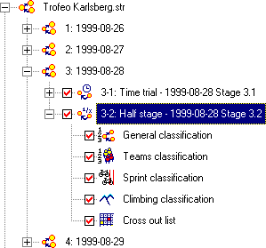
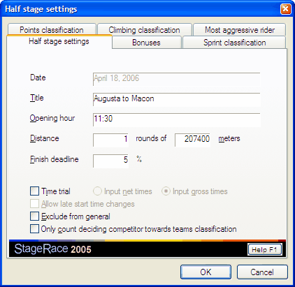

Half Stages
An event is divided into
full stages or days. Next, every such
stage consists of one or more half stages.
A half stage is the only thing in StageRace that actually requires competitors
to do any work; it represents them riding from A to B (or from A to A, for
that matter).
A half stage can optionally be a
time trial.
A half stages holds at a maximum the following items:
Adding
When a
full stage is selected in the
event tree, a new half stage can be added through in in the
menu. The Half stage settings dialog (read
below) will appear.
New half stages are added at the end of the list of existing half stages
for the particular full stage.

It is not possible to insert new half stages between existing half stages
in the same full stage.
Deleting
A half stage that is selected in the
event tree can be deleted through
in the menu. A confirmation will
be asked for after which the entire half stage will be deleted.
Half Stage Settings
The Half stage settings dialog for an existing
stage can be accessed through
in the menu, when the half stage
is selected in the
event tree.

Main Settings
The following parameters can be entered:
- Title
Enter
the title of the half stage.
Often the start and finish locations of
the particular half stage are entered, e.g. "Maastricht-Maastricht"
or "Paris-Roubaix". - Opening
hour
Enter the starting time of the half stage.
Note that
this is an informational field and is not used in any calculations. - Distance:
... rounds of ... meters
Enter the number of rounds and the distance
per round.
The number of rounds should always be one or more. Therefore,
with city-to-city events the number of rounds is normally one exactly and
the total distance will be entered directly as it is.
For time trials
the number of rounds is forced to one.
What you enter is always interpreted
as a meters value. Even if you choose to print only miles
values on
publications, you still have to enter values in meters here. - Time
trial
Set the half stage to be a
time trial. Additionally choose the type of
time trial:
- Input net times
- Input
gross times
- Exclude from general
Set the half stage arrival not to be added to the general classification
and the cumulative distance. This is useful for
team time trials. Note that bonus seconds etc. are nevertheless counted
as before. - Only count deciding competitor
towards teams classification
Set the teams classification only
to use the competitor that in the
Ranking section of the settings dialog
is set as the deciding competitor. This is useful for
team time trials that should have every team only count once towards
the teams classification.
Points and Bonus Schemes
For every single half stage you can configure the desired scheme for
bonus seconds that counts towards the general classification and
the desired points schemes for
sprint,
points and
climbing classifications. For each of these four points and bonus
schemes there exists an extra tab sheet in the Half
stage settings dialog.